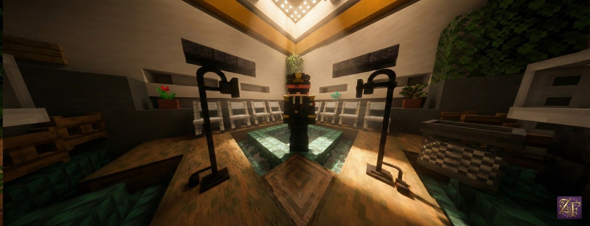

La Fondazione
Il 25/01/2026 nasce Pactum Patriae, aderisci al nostro cammino.
Prima la patria!
Il 25/01/2026 nasce Pactum Patriae, aderisci al nostro cammino.
Segui il nostro canale per costanti aggiornamenti!
Segui il nostro canale per costanti aggiornamenti!